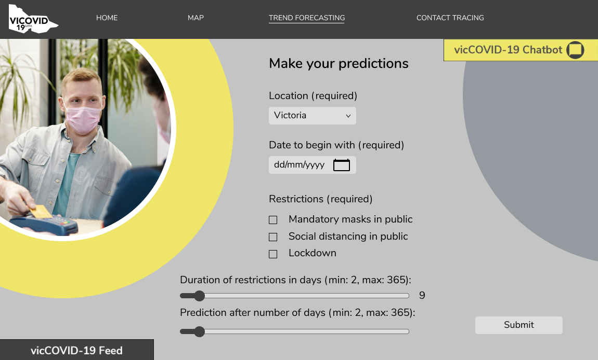
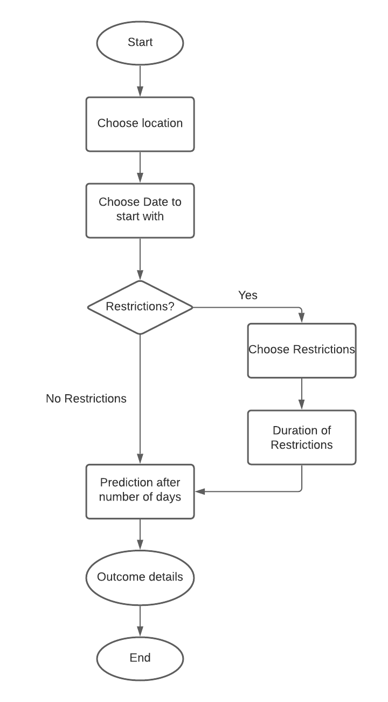

Description
COVID-19 Trend can predict the pandemic for the future based on user inputs. Users can therefore get a better understanding of why restrictions work and be more hopeful in the future. Based on research, one of the main factors that affect future pandemic is the R0, which is the definition of how many cases in average can be infected by that one single case. Upon that, R0 can be affected by lots of different factors. For example, implementing restrictions can lower population density and therefore lower the transmission(R0). Thus, users can choose the following options to predict future COVID-19:
- Location: Users can choose different states/cities in Australia to predict the future pandemic. Different states/cities have different populations.
- Restrictions: We currently plan to implement 4 options in Measurements: none, mandatory face masks, social distancing and lockdown. Each option can lower the R0 except for “none” and users can choose multiple measurements as well. The actual % that the measurements can lower is still not confirmed yet.
- Date: Different dates have different number of cases, so this will affect the outcomes of predictions as well. Plus, COVID-19 has an incubation period of up to 14 days, so our algorithm will take that into consideration as well.
User Stories
- As a university student who is depressed about the current COVID-19 situation, I want to see predictions for the future based on the current restrictions, so that I can make plans and be more confident in the future.
- As a health expert working in the Australian Department of Health, I want to give advices to the Australian government of what actions to take based on the current situation of COVID-19, so that our country can flatten the curve and beat the virus.
Design
Flow Chart
Validation
This feature will be tested based on whether the generated outcome is the same as the expected outcome. After we come up with the algorithm we will calculate the outputs manually based on the inputs and then run the system to see if it generates the same output.